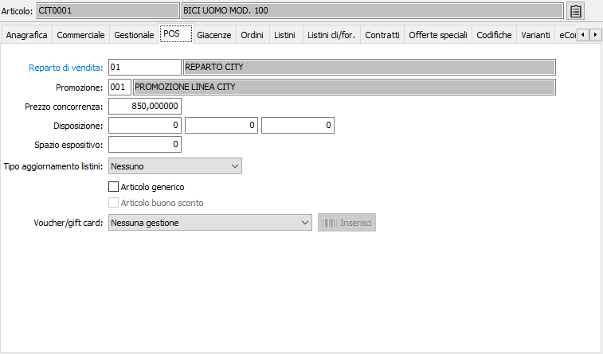
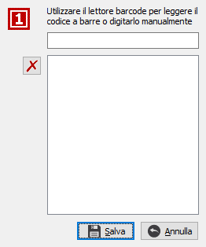

POS
La sezione video è attiva solo in presenza del modulo "Vendite al dettaglio".

REPARTO DI VENDITA: indicare il codice del reparto di vendita del prodotto. Sul campo sono attive le funzioni di ricerca (F9) e manutenzione (CTRL+W) della tabella stessa.
PROMOZIONE: indicare il codice dell'eventuale promozione a cui è soggetto il prodotto. Sul campo sono attive le funzioni di ricerca (F9) sulla tabella stessa.
PREZZO CONCORRENZA: indicare l'eventuale prezzo praticato dalla concorrenza.
DISPOSIZIONE: indica la disposizione del prodotto (lunghezza, larghezza, altezza).
SPAZIO ESPOSITIVO: indica la misura in cm occupata dal prodotto sullo scaffale.
TIPO AGGIORNAMENTO LISTINI: indica il criterio di aggiornamento dei listini. Valori possibili: nessuno, prezzo ultimo carico, prezzo medio carico, prezzo listino. Attualmente non gestito.
ARTICOLO GENERICO: definisce se l'articolo può essere utilizzato come generico per la vendita di prodotti non codificati (casella con segno di spunta).
ARTICOLO BUONO SCONTO: la casella è attiva solo per i prodotti che non generano magazzino, cioè con il campo Tipo prodotto impostato come "Prestazione/servizio"; definisce se l'articolo è utilizzabile come articolo valido per l'inserimento dei buoni sconto (casella con segno di spunta).
VOUCHER/GIFT CARD: alternativo ad articolo generico ed articolo buono sconto; se attivo definisce se l'articolo è un voucher oppure una gift card e di conseguenza debba essere generato un voucher in chiusura vendita; i Voucher generati da questi prodotti sono tutti di tipo libero. Se è indicato che il voucher debba essere stampato viene effettuata la stampa laser oppure su scontrino se attiva la voce “StampaVoucher” nel file di configurazione del CRF. La vendita di un prodotto voucher/gift card assegna in automatico al sottoconto di ricavo del rigo il codice del “Conto incassi voucher” presente nei codici fissi.

Per i prodotti di tipo "Gift Card da non stampare" è attivo il pulsante "Inserisci" che apre una finestra in cui è possibile inserire un elenco di codici a barre; al salvataggio i codici vengono generati come codifiche interne del prodotto. Durante l'inserimento dei codici a barre è attivo un controllo per verificare che il codice inserito non sia già presente nelle codifiche o nei codici dei prodotti; al salvataggio eventuali errori che si possono verificare non pregiudicano il salvataggio dei codici corretti ed al termine dell'operazione, in presenza di errori si apre una finestra che riporta i codici che non è stato possibile registrare e relativo motivo. Quando in fase di vendita si passa il barcode relativo ad un prodotto di tipo gift card non stampabile, viene richiamato il prodotto che viene venduto e dà origine ad un voucher (di tipo libero) che viene collegato al barcode utilizzato per la vendita del prodotto stesso; dopo la vendita quel barcode non richiamerà più il prodotto ma il voucher collegato. In manutenzione voucher è visibile il barcode associato ed è possibile ricercare il voucher tramite la finestra di ricerca anche per barcode gift card; se viene fatta la stampa interna del voucher saranno stampati entrambi i barcode.